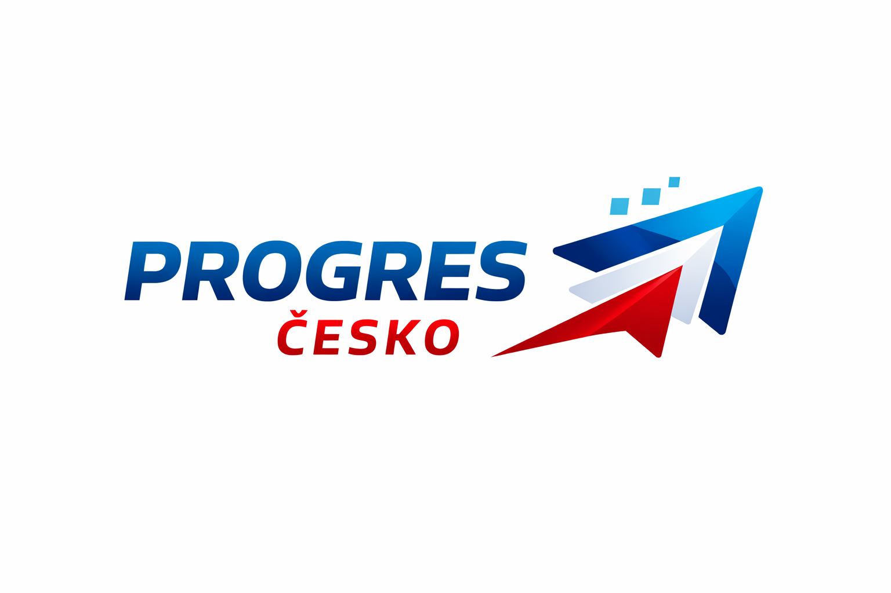

Technologie, odpovědnost, příležitost
Česká republika se nachází v době, kdy se svět kolem nás mění rychleji než kdykoliv předtím. Naším cílem je vybudovat stát, který nebude pro své občany přítěží, ale partnerem. Chceme Česko, které přestane být „montovnou Evropy“ a stane se jejím technologickým a mozkovým centrem.
Progres znamená technologický vývoj, modernizaci a pohyb dopředu.
Strana PROGRES ČESKO vznikla s přesvědčením, že na tyto výzvy nesmíme reagovat strachem nebo uzavřením se do minulosti, ale odvahou a inovacemi.
Jsme moderní středopravicová síla. Věříme v zemi, kde moderní technologie usnadňují každodenní život, kde vzdělání dává mladým lidem skutečná křídla a kde je svoboda jednotlivce pevně spojena s jeho odpovědností vůči společnosti i planetě.
Klíčem k úspěchu je modernizace školství , důstojné platy učitelů a reformace osnov. Podporujeme také programy jako je Erasmus+ a vznik sítě mezi školních aktivit.
Základem naší bezpečnosti je pevné a aktivní ukotvení v demokratických strukturách EU a NATO.
Investujeme do modernizace bez dluhů a budování globálního kreditu.
Zaměříme se na modernizaci a inovace a masivní zavádění technologií Průmyslu 4.0. Budeme podporovat domácí výrobce a dbát na zodpovědné hospodaření státu.
Digitalizace a efektivní péče zachraňuje životy. Zajistíme investice do nejmodernější techniky a podporu nové generace zdravotníků.
Prosazujeme ochranu půdy před drancováním a šetrnou péči o českou krajinu. Chceme zemědělství s minimem chemie a podporu lokálních producentů.
Naší prioritou je dálniční síť a stavba vysokorychlostních železnic. Zavádíme technologie místo kolon, jako je například jednotná aplikace pro všechny druhy dopravy.
Rozhodování založené
na datech a faktech.
Otevřená a slušná
politická kultura.
Dlouhodobé myšlení místo
krátkodobých slibů.